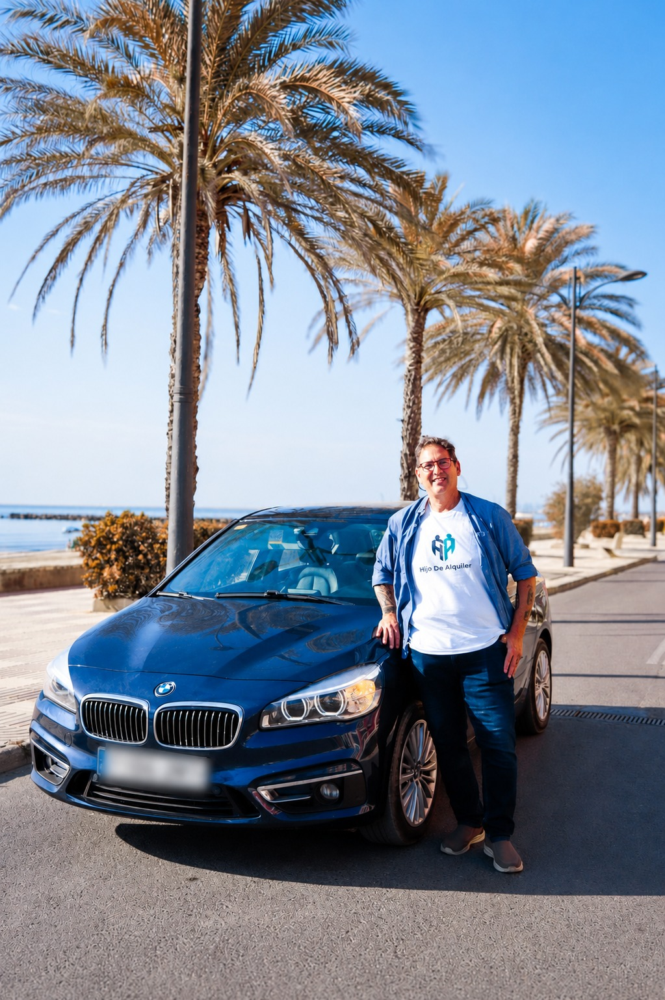
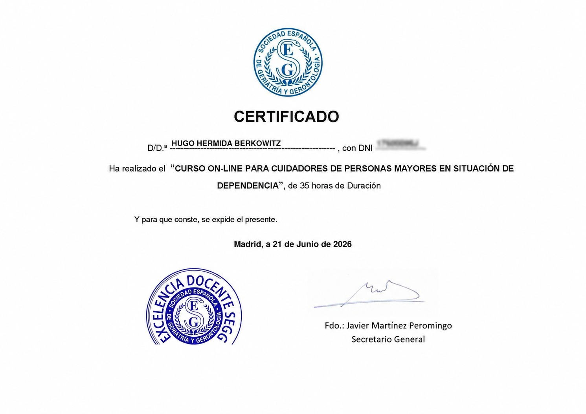
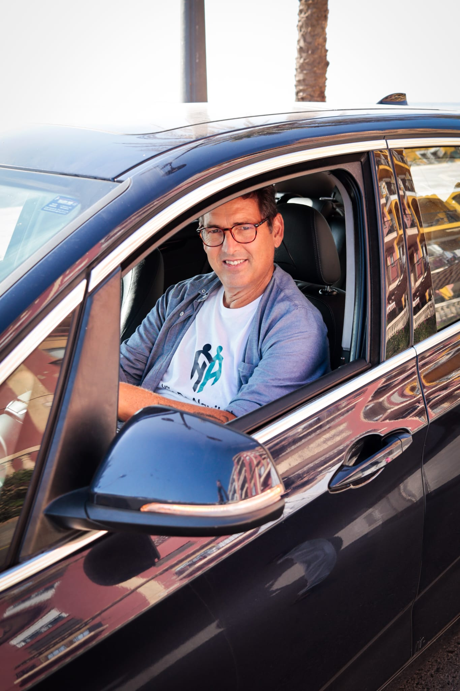

ACOMPAÑAMIENTO CERTIFICADO · SEGG · VALENCIA
Un acompañante y conductor de confianza,
para quienes no deberían
viajar solos.
Para hijos e hijas que no pueden estar allí cada vez: acompañamos a su familiar a consultas, compras y gestiones, esperamos con él o ella, y le avisamos por WhatsApp cuando llegue a casa. Siempre el mismo profesional de confianza.

¿QUÉ ES HIJO DE ALQUILER?
Tranquilidad para la familia, compañía real para ellos.
No somos un taxi ni un cuidador más. Recogemos a su familiar en casa, le acompañamos durante toda la actividad — dentro de la consulta, en la tienda, en el evento — y le devolvemos a casa. Siempre la misma persona de confianza, sin cambios de turno, con aviso por WhatsApp en cada etapa para que usted esté tranquilo esté donde esté.
También acompañamos a personas en recuperación postoperatoria, con movilidad temporalmente reducida, o a cualquiera que necesite un acompañamiento de confianza.

GARANTÍA DE FORMACIÓN
Certificado por la SEGG, la Sociedad Española de Geriatría y Gerontología.
No cualquiera puede acompañar a su familiar. Hugo cuenta con la certificación de la SEGG, la entidad de referencia en España en el cuidado y acompañamiento de personas mayores — formación específica en trato, seguridad y primeros auxilios básicos, no solo un carnet de conducir.

SOBRE MÍ
No contrata a una empresa. Me conoce a mí.
Fundé Hijo de Alquiler porque conozco muy bien la preocupación que supone tener a un ser querido lejos de uno: tengo una madre y una suegra mayores que viven lejos, y siento de primera mano esa necesidad de contar con alguien de confianza cuando uno no puede estar allí.
“Mi objetivo es ofrecer a cada familia la tranquilidad que yo mismo desearía tener si alguien estuviera cuidando de mi propia madre.”
Leer mi historia completa →Todos los acompañantes viajan 100% asegurados.
¿PARA QUIÉN ES?
Ya sea que viva lejos o esté aquí al lado
Hijos e hijas ocupados →
Vive fuera de Valencia o no puede ausentarse del trabajo. Nosotros vamos en su lugar y le mantenemos informado.
Personas mayores independientes →
Ya no conduce o prefiere no ir sola. Le acompañamos con respeto, a su ritmo.
Movilidad temporal reducida →
Tras una cirugía o convalecencia, para quienes caminan con apoyo. (Vehículo no adaptado para sillas de ruedas.)
NUESTROS SERVICIOS
Acompañamiento para cada momento
Consultas médicas →
Acompañamiento dentro y fuera de la consulta.
Compras y gestiones →
Farmacia, banco, administración y trámites.
Eventos y visitas familiares →
Celebraciones, reuniones, misa y actos religiosos.
Paseos y vida social →
Actividades y salidas cotidianas.
Comunidad Valenciana →
Desplazamientos de media distancia por la provincia.
Madrid y Barcelona →
Viajes de larga distancia, con o sin pernocta.
CÓMO FUNCIONA
Tres pasos, siempre la misma persona
Recogida en su domicilio
Vamos a buscar a su familiar puntualmente, con nuestro propio vehículo.
Acompañamiento completo
Le acompañamos durante toda la actividad, no solo el trayecto.
Regreso a casa
Le devolvemos a casa con total tranquilidad para toda la familia.
PRECIOS
Tarifas claras, sin sorpresas
Estas son nuestras tarifas base. Para trayectos combinados, paquetes recurrentes o casos especiales, elaboramos un presupuesto personalizado sin compromiso.
ZONA DE SERVICIO
Valencia, la Comunidad Valenciana y más allá
Damos servicio en Valencia capital, toda la Comunidad Valenciana y trayectos de larga distancia a Madrid y Barcelona, con o sin pernocta.
- Local — Valencia capital y alrededores
- Media distancia — Comunidad Valenciana (40–150 km)
- Larga distancia — Madrid y Barcelona
¿Tiene dudas?
Respondemos a las preguntas más habituales sobre el servicio.
Ver todas las preguntas frecuentes →CONTACTO
Reserve su acompañamiento
Hugo Hermida Berkowitz
Acompañante certificado · SEGG
Cuéntanos tu caso“Mi objetivo es ofrecer a cada familia la tranquilidad que yo mismo desearía tener si alguien estuviera cuidando de mi propia madre.”
Hugo Hermida Berkowitz, fundador